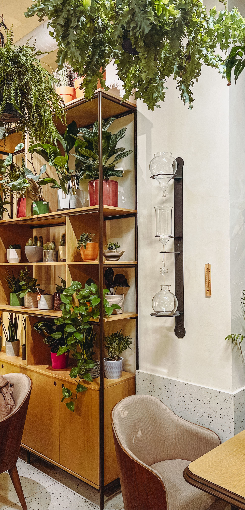
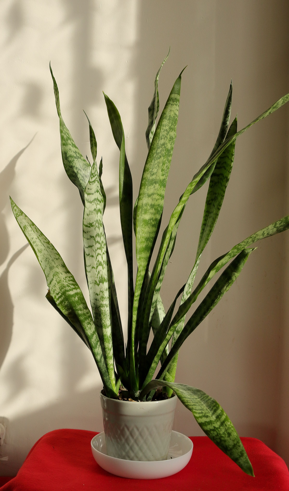
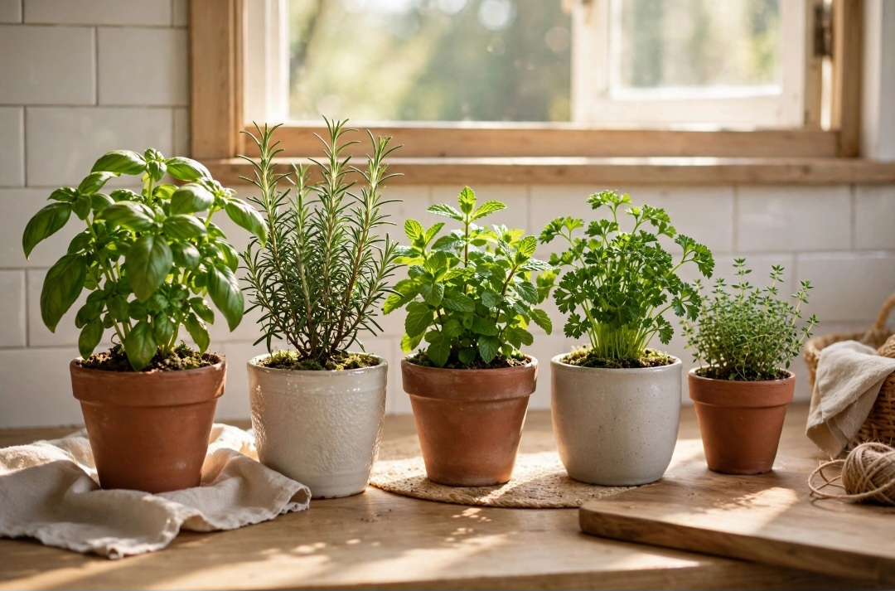

En este artículo
- Introducción
- Durabilidad: comprar menos y utilizar durante más tiempo
- Origen, certificaciones y transparencia de la información
- Materiales, calidad del aire y uso dentro de casa
- Reutilización, segunda mano y materiales recuperados
- Cómo tomar una decisión sostenible con un presupuesto real
- Método práctico
- Preguntas frecuentes
- Conclusión
Introducción
Descubre cómo elegir materiales sostenibles para el hogar con criterios prácticos de tamaño, materiales, mantenimiento, seguridad, funcionalidad y estilo para tomar una decisión adecuada.
Una buena elección empieza por comprender las condiciones reales del espacio y el uso que tendrá cada elemento. Antes de comprar, conviene medir, comparar materiales, revisar cuidados y pensar cómo cambiarán las necesidades con el tiempo.
Durabilidad: comprar menos y utilizar durante más tiempo
Un material sostenible no debería evaluarse únicamente por una etiqueta o por su apariencia natural. La duración es fundamental. Si un suelo, mueble o revestimiento debe reemplazarse con frecuencia, cada sustitución implica nuevos recursos, transporte y residuos. Por eso conviene analizar vida útil, reparabilidad y mantenimiento.
Busca materiales apropiados para la función. Una madera adecuada en un dormitorio puede no ser la mejor elección en una zona constantemente húmeda. Elegir según condiciones reales evita deterioro prematuro. También pregunta si existen piezas de recambio y si el acabado puede renovarse.
El diseño atemporal ayuda a prolongar el uso. Esto no significa renunciar a personalidad, sino evitar decisiones que probablemente querrás sustituir en poco tiempo solo por cambios de tendencia. Los elementos permanentes pueden ser más neutros y los accesorios asumir cambios decorativos.
Mantener correctamente lo que ya tienes suele ser una de las decisiones más eficientes. Antes de reemplazar, evalúa limpieza profunda, reparación, lijado, pintura o retapizado cuando sean técnicamente viables.
Origen, certificaciones y transparencia de la información
Conocer el origen permite evaluar mejor un material. En madera, determinadas certificaciones forestales pueden aportar información sobre gestión responsable. En otros productos, busca declaraciones ambientales, composición y datos verificables del fabricante en lugar de confiar únicamente en palabras como “eco”, “verde” o “natural”.
La fabricación local puede reducir ciertas distancias de transporte y apoyar cadenas de suministro cercanas, pero no convierte automáticamente un producto en sostenible. Deben considerarse materias primas, proceso, durabilidad y posibilidad de reparación.
Pregunta por contenido reciclado cuando sea relevante y distingue entre material reciclado y reciclable. Un producto técnicamente reciclable puede terminar como residuo si no existe infraestructura para procesarlo en tu zona.
La transparencia es una señal útil. Fabricantes que ofrecen fichas técnicas, instrucciones de mantenimiento, composición y certificaciones permiten tomar decisiones mejor fundamentadas. Cuando la información es vaga, compara alternativas antes de comprar.
Materiales, calidad del aire y uso dentro de casa
Los materiales interiores conviven con las personas durante muchas horas. Pinturas, adhesivos, barnices, tableros y textiles pueden emitir compuestos en diferentes cantidades. Revisa especificaciones de bajas emisiones cuando corresponda y ventila correctamente durante y después de una reforma.
“Natural” tampoco significa automáticamente inocuo. Algunos productos naturales pueden causar alergias, requerir tratamientos o no ser adecuados para determinadas aplicaciones. Utiliza materiales certificados para el uso previsto y sigue instrucciones de seguridad.

En cocinas y baños, además de emisiones, importan humedad, limpieza e higiene. Un material que se deteriora rápidamente por agua no será una elección responsable aunque su origen sea favorable. La sostenibilidad necesita funcionar junto con salud y durabilidad.
Si realizas una reforma importante, un profesional puede ayudarte a comparar fichas técnicas y compatibilidad entre capas: soporte, adhesivo, acabado y sellado forman un sistema y deben trabajar correctamente juntos.
Reutilización, segunda mano y materiales recuperados
Antes de comprar nuevo, considera si puedes reutilizar algo existente. Muebles de buena estructura pueden repararse o actualizarse; puertas, baldosas y madera recuperada pueden incorporarse a proyectos cuando su estado y características lo permiten.
Comprar de segunda mano reduce la demanda de productos nuevos y puede aportar piezas de gran calidad. Revisa estabilidad, presencia de plagas, humedad y acabados antiguos antes de introducir un objeto en casa. En artículos que afectan a seguridad, higiene o normativa, verifica que sean apropiados.
Los materiales recuperados necesitan planificación. Las dimensiones disponibles pueden condicionar el diseño, por lo que conviene medir antes de empezar. Aceptar pequeñas variaciones de tono y textura forma parte de su carácter.
También diseña pensando en un futuro desmontaje. Sistemas atornillados o piezas reemplazables pueden facilitar reparaciones frente a soluciones completamente pegadas que obligan a desechar el conjunto cuando falla una parte.
Cómo tomar una decisión sostenible con un presupuesto real
No necesitas transformar toda la casa al mismo tiempo. Prioriza las compras que realmente debes hacer y aplica criterios sostenibles en cada reemplazo. Esta estrategia evita desechar elementos que todavía funcionan únicamente para adquirir versiones supuestamente más ecológicas.
Compara coste por años de uso, no solo precio de compra. Un producto reparable y duradero puede ofrecer mejor valor que una opción barata que se reemplaza repetidamente. Incluye mantenimiento y consumibles en el cálculo.
Invierte más en superficies y muebles sometidos a uso intenso. En accesorios decorativos, segunda mano y reutilización ofrecen oportunidades para reducir gasto. Una casa sostenible puede construirse gradualmente.
Finalmente, evita comprar por culpa o marketing. Define tus prioridades —duración, procedencia, bajas emisiones, reciclabilidad o reparación— y busca evidencia concreta. Ningún material es perfecto en todos los aspectos, pero una elección informada puede reducir impactos y mejorar la calidad del hogar.
Un método práctico para tomar la decisión final
Antes de comprar, escribe tres columnas: necesidades obligatorias, preferencias y límites. En la primera coloca aquello que afecta al funcionamiento; en la segunda, color, estilo o acabados; en la tercera, presupuesto, medidas y mantenimiento. Este ejercicio evita que una característica atractiva haga olvidar un requisito esencial.
Compara varias opciones utilizando los mismos criterios. No te limites a fotografías: revisa dimensiones, composición, instrucciones, garantía y condiciones de uso. Cuando sea posible, observa una muestra físicamente y comprueba cómo se comporta con la luz y los materiales del entorno.

Calcula también el coste de mantener la elección. Productos de limpieza, tratamientos periódicos, repuestos o instalación pueden cambiar el presupuesto real. Una opción razonable es aquella que puedes cuidar correctamente sin convertir el mantenimiento en una carga.
Finalmente, evita decidir con prisa. Una compra que permanecerá años merece una revisión adicional. Si todavía tienes dudas entre dos alternativas, vuelve a la función principal y elige la que resuelva mejor el uso cotidiano.
Planificar qué ocurrirá al final de la vida útil
Antes de comprar, pregunta si el material puede repararse, desmontarse, reutilizarse o reciclarse en tu zona. Los productos formados por muchas capas inseparables pueden ser difíciles de recuperar aunque cada componente por separado sea reciclable.
Conservar documentación y composición facilita una gestión futura. Cuando retires materiales de una reforma, separa aquellos que puedan reutilizarse o entregarse en canales específicos en lugar de mezclarlos automáticamente con residuos generales.
Cómo evaluar madera, piedra, metal, vidrio y textiles
En madera, revisa procedencia, certificación cuando corresponda, durabilidad y tipo de acabado. Una especie adecuada y bien mantenida puede utilizarse durante décadas. En piedra, considera extracción, transporte, posibilidad de reutilización y mantenimiento. Material local puede reducir distancias, aunque cada proyecto debe evaluarse de forma completa.
Metales como acero y aluminio requieren energía en su fabricación, pero pueden ofrecer larga duración y circuitos de reciclaje desarrollados. El contenido reciclado y la posibilidad de separar las piezas al final del uso son datos útiles. El vidrio también puede durar mucho y reciclarse en determinados sistemas.
En textiles, pregunta por composición, resistencia y cuidado. Una tela que necesita procesos de limpieza muy intensivos o se desgasta rápidamente puede no ser la mejor opción. Fibras naturales, recicladas y sintéticas tienen ventajas y limitaciones distintas.
Pinturas, adhesivos y acabados con información verificable
Los acabados representan una parte pequeña del volumen de una reforma, pero tienen contacto directo con el ambiente interior. Busca fichas técnicas y datos de emisiones cuando estén disponibles. Una pintura de bajas emisiones debe seguir siendo adecuada para la superficie, humedad y nivel de limpieza requerido.
Adhesivos y selladores también forman parte del sistema. Elegir una baldosa sostenible y fijarla con un producto incompatible puede reducir la duración del conjunto. Sigue especificaciones y evita mezclar soluciones sin comprobar compatibilidad.
Calcula cantidades para reducir sobrantes. Conserva una pequeña cantidad de pintura correctamente almacenada para retoques, pero no compres excesos que terminarán como residuo. Infórmate sobre puntos locales de gestión de productos que no pueden desecharse con basura común.
Preguntas útiles para hacer al proveedor
Pregunta cuánto dura el producto en el uso previsto, qué mantenimiento necesita, dónde se fabrica, qué contiene y si dispone de certificaciones relevantes. Consulta si puede repararse y si existen repuestos. Estas preguntas convierten una afirmación de marketing en información comparable.

También pregunta qué ocurre al final de su vida útil. ¿Puede desmontarse? ¿El fabricante recupera piezas? ¿Existe reciclaje disponible en tu región? No siempre habrá una respuesta perfecta, pero la transparencia ayuda a elegir.
Guarda facturas y fichas técnicas de materiales instalados. En una futura reparación o reforma, saber exactamente qué se utilizó evita retirar componentes que todavía podrían conservarse.
Cómo aplicar estos criterios en una reforma
En una reforma, empieza por conservar todo lo que esté en buen estado. Demoler por sistema aumenta residuos y presupuesto. Un suelo existente puede restaurarse, una puerta puede pintarse y una cocina puede actualizarse parcialmente sin reemplazar todos sus módulos.
Cuando sí sea necesario sustituir, elige materiales compatibles con la vida útil del elemento. Una superficie sometida a agua, calor o tránsito necesita resistencia suficiente. La sostenibilidad no consiste en escoger la opción con apariencia más natural, sino en evitar fallos y reemplazos prematuros.
Coordina decisiones entre profesionales. Arquitecto, instalador, carpintero y pintor pueden necesitar conocer materiales elegidos para asegurar compatibilidad. Adhesivos, selladores, tratamientos y soportes forman parte del impacto y del rendimiento final.
Planifica cortes para reducir desperdicio. Las medidas de baldosas, tableros o encimeras pueden influir en la cantidad de sobrantes. Pregunta si el proveedor acepta devoluciones de cajas cerradas o dispone de programas de recuperación.
El mantenimiento también forma parte de la sostenibilidad
Un material duradero solo cumple su potencial si se cuida. Utiliza productos de limpieza compatibles y evita tratamientos agresivos que acorten su vida. Guarda instrucciones de fabricante junto con documentos de la vivienda.
Repara pequeños daños pronto. Una junta deteriorada puede permitir entrada de agua y afectar materiales que estaban en buenas condiciones. Una capa de protección renovada a tiempo puede evitar sustituir una pieza completa.
Al comprar, pregunta qué mantenimiento será necesario durante cinco o diez años. Esta perspectiva permite comparar de forma más realista dos opciones con precios y necesidades diferentes.
Prioriza los cambios con mayor impacto en tu casa
Si el presupuesto es limitado, no intentes sustituir todos los materiales existentes. Empieza por aquello que está deteriorado o debe renovarse por una necesidad real. Conservar un elemento funcional suele evitar más residuos que reemplazarlo únicamente porque existe una alternativa con mejores credenciales ambientales.
En nuevas compras, prioriza superficies de larga vida, muebles de uso intenso y materiales difíciles de cambiar después. Los accesorios pueden evolucionar con el tiempo. Esta jerarquía permite invertir mejor y reduce decisiones apresuradas.
Preguntas frecuentes
¿Cuál es la mejor manera de empezar?
Empieza definiendo las condiciones reales de uso y comparando opciones según el tema de cómo elegir materiales sostenibles para el hogar. Medir, observar y revisar las especificaciones evita muchas decisiones equivocadas.
¿Cuánto tiempo se necesita para ver resultados?
La elección puede hacerse en poco tiempo si las necesidades están claras, pero conviene comparar varias opciones y probar muestras o medidas antes de realizar una compra o intervención definitiva.
¿Qué errores deberían evitarse?
Los errores más frecuentes son elegir solo por apariencia, ignorar medidas y condiciones ambientales, no considerar el mantenimiento y utilizar materiales o sistemas que no son apropiados para el uso previsto.
Conclusión
Cómo elegir materiales sostenibles para el hogar es más sencillo cuando la decisión combina función, dimensiones, mantenimiento, seguridad y estética. Comparar opciones con criterios concretos permite evitar compras impulsivas y conseguir un resultado que se adapte mejor a la vida cotidiana.